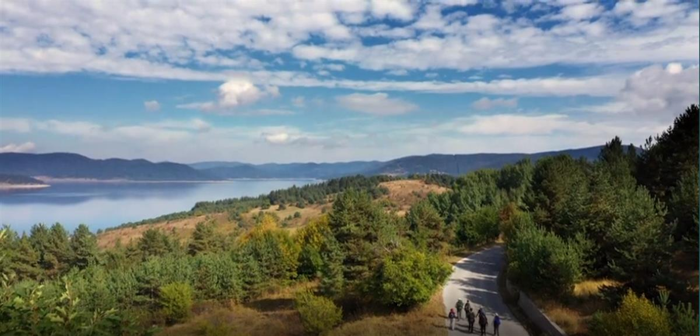
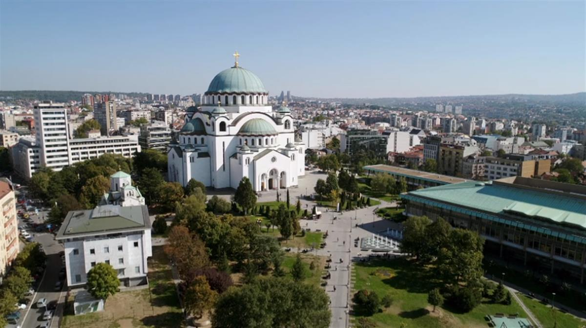
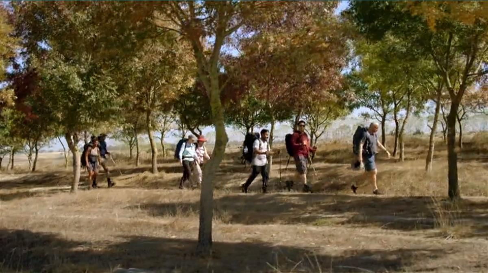

Pilgrims’ progress … Adrian, with Dom Joly, Edwina Currie, Mim Shaikh, Pauline McLynn, Fatima Whitbread and Amar Latif. Photograph: Oliver Rose/BBC/CTVC
Pilgrims’ progress … Adrian, with Dom Joly, Edwina Currie, Mim Shaikh, Pauline McLynn, Fatima Whitbread and Amar Latif. Photograph: Oliver Rose/BBC/CTVC
Why a pilgrimage was good practice for lockdown
Thu 26 Mar 2020 08.00 GMT Last modified on Thu 26 Mar 2020 08.23 GMT
My experience on the Sultan’s trail found that two Christians, two Muslims, a Jew and two atheists could live peaceably together, although the mountain scenery seems a lifetime away now
Back in early autumn I went on a pilgrimage from Belgrade to Istanbul with six others to film a television programme that airs on Friday. At the best of times, the mountains of Bulgaria would feel a lifetime away, but now it all feels so much further.
I took part because I enjoy talking about faith, and love walking. Our route was part of the Sultan’s Trail, a long-distance footpath from Vienna to Istanbul. It marks the 16th-century marches taken by Suleiman the Magnificent and his Ottoman armies as they conquered Belgrade and most of Hungary before the Viennese held out against them. The trail is styled the “path of peace”, along which all cultures and religions can come together.
Our magnificent seven consisted of two Christians, two Muslims, two atheists and a Jew. The two Christians were me and Fatima Whitbread; the Muslims were the broadcasters Mim Shaikh and Amar Latif; the atheists were the comedian and writer Dom Joly and the actor Pauline McLynn who was Mrs Doyle in Father Ted; and last but not least Edwina Currie, who was raised Orthodox Jewish.
Now, seven of us on top of a Bulgarian mountain, Serbian monastery or Turkish mosque, or bunking up in confined spaces between these places, is hardly like the kind of home isolation we are all having to do now. But it must count for something that we never fell out. There is hope in there somewhere.



Pilgrimage: The Road to Istanbul starts Friday, 9pm, BBC Two.
SOURCE: THE GUARDIAN